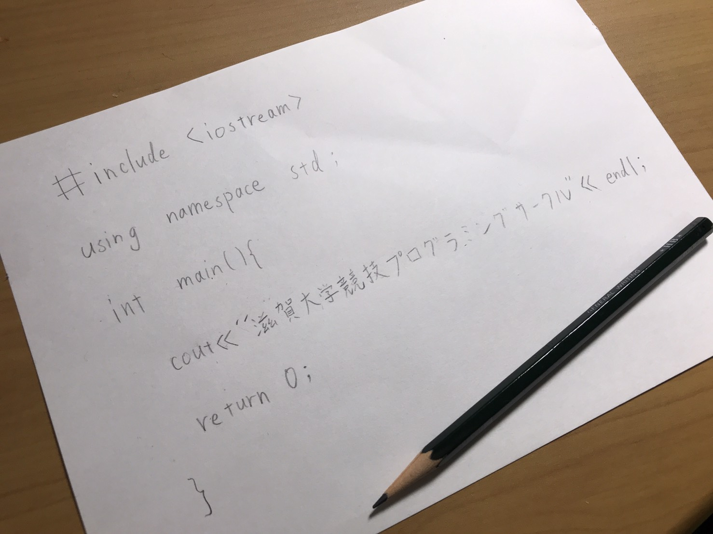

滋賀大学競技プログラミングサークル新設しました！
私たちは今年度から、いよいよ、ついに、満を持して、滋賀大学彦根キャンパスに競技プログラミングサークルを作りました。
メンバーのほぼ全員が大学からプログラミングを始めた人で構成されています。今年から活動を始めるのでみんな初心者です。
他大学の競技プログラミングサークルよりもたぶん士気も練度も低いのでまったりやっていこうかなと思っています。
俺たちの戦いはここからだ！！
メンバー募集中なり！
随時メンバーを募集しています。競技プログラミング興味あるよーって方、よかったら連絡ください。
学部やプログラミング経験は問いません。同じことに興味持ってる仲間が欲しくて作ったサークルなので経験とかは全然いりません。やる気はあるとうれしいです。
連絡先はこちら→お問い合わせ
昨年の活動
昨年にサークルとしての活動はICPC(国際大学プログラミングコンテスト)の予選(予選落ち)とPG BATTLE 2019に参加しました。また、勉強会を企画していましたが企画倒れしました。2020年度は成功させたいです。また、ほぼ毎週のatcoderのあとにLINEでガヤガヤしてます。